Лучевая кератотомия (RK) - ненужное повреждение глаз
"Действительно, те, кто не обращает внимания на предыдущие ошибки, обречены повторять их - в ущерб нашим пациентам и нашей профессиональной репутации".;(Джордж Уоринг, доктор медицины, 1999)
Метод RK был внедрен в Соединенных Штатах в 1978 году без надлежащей научной оценки долгосрочной безопасности и эффективности. Метод RK состоял из радиальных разрезов роговицы, которые делались вручную с помощью лезвия. В 1980-х годах эта процедура вызвала всеобщее беспокойство, и в конечном итоге RK была выброшена на свалку рефракционных операций. Будет ли LASIK следующей?
"Хорошо известно, что разрезы на коже никогда полностью не заживают...";(Нассаралла и др., 2007)
Как и лоскут LASIK, разрезы RK никогда не заживают и остаются открыт на всю оставшуюся жизнь пациента. Такая ситуация подвергает пациентов с РК пожизненному повышенному риску инфицирования роговицы и даже внутреннего воспаления и инфекции глаза. Пациенты с РК, у которых развивается неизлечимое инфекции может потребоваться пройти пересадка роговицы , иногда даже спустя много лет после РК.
Пациенты, страдающие от проблем после РК, приглашаются на присоединяйтесь к обсуждению на FaceBook .
Изображения на этой странице были любезно предоставлены Доктор Эдвард Бошник , который посвятил свою практику восстановлению качественного зрения и комфорта после RK, LASIK и других видов рефракционной хирургии глаза. Многие из представленных ниже фотографий были сделаны после введения в глаз красителя, который выделяет больные или поврежденные ткани при специальном освещении.
Офтальмолога обязали выплатить $5,6 млн после "небрежной" операции по коррекции зрения, которая положила конец карьере стоматолога - National Post, 17.10.2019
Из статьи: Брент Джесперсон, будучи дантистом, без проблем выполнял свою работу в очках с толстыми линзами. Совсем другое дело - заниматься спортом в очках в форме бутылочек из-под кока-колы. Поэтому Джесперсон ухватился за возможность пройти первую операцию по коррекции зрения в 1994 году, особенно после того, как выбранный им офтальмолог предположил, что риски минимальны. Сначала казалось, что "лучевая кератотомия" прошла успешно, но с годами его зрение действительно ухудшилось, появились помутнения в одном глазу, блики и нарушение восприятия глубины. В конце концов, не имея возможности работать с пациентами и чувствуя себя подавленным и склонным к суициду, Джесперсон в 2009 году оставил свою прибыльную стоматологическую практику.
Канадцы страдают от серьезных осложнений после лучевой кератотомии на глазах - Новости CTV от 13.01.2019
Из статьи: Однако сегодня от этого некогда знаменитого метода лечения в значительной степени отказались, отчасти из-за сомнений в его безопасности...
Доктор Эдвард Бошник (Edward Boshnick) - окулист из Майами, специализирующийся на лечении пациентов с потерей зрения или дискомфортом после перенесенных в прошлом операций на глазах. По его словам, у пациентов с РК нередко развиваются осложнения спустя долгое время после процедуры.
"После операции эта роговица может изменить форму, поэтому она уже не будет такой жесткой", - сказал он в интервью CTV News. "Многие из этих пациентов, возможно, большинство из них, стали очень дальнозоркими и астигматичными из-за неправильного расположения роговицы. роговица увеличена.";
Другие осложнения RK, объяснил Бошник, могут включать "сухость глаз, глазную боль", яркий свет, ореолы, рассеянное зрение.;
Добавлено 3.09.2016. Следующая статья была написана окулистом и опубликована в газете Times Leader в 1994 году.
НА КОНЦЕ СКАЛЬПЕЛЯ НЕТ РЕЗИНКИ. Лучевая кератотомия - самый грубый разрез.
Четверг, 10 февраля 1994 г.
Автор: доктор ДЖОЗЕФ Х. СМИТ
Несколько лет назад я начал собирать истории о лучевой кератотомии - глазной операции, которая обещает близоруким людям жизнь без очков. Тогда я понял, что лучевая кератотомия - это не шутка.
Что-то не так!
Лучевая кератотомия, на мой взгляд, является ненужной процедурой, которая рекламируется в газетах, журналах и на телевидении и которая слишком часто приводит к печальным осложнениям.
Я оптометрист, а не офтальмохирург. Это означает, что в своей практике я часто наблюдаю пациентов после такой операции. У некоторых из них результаты были хуже, чем хотелось бы, а у некоторых и вовсе закончились катастрофой. Читать далее
Добавлено 14.09.2014: На фотографии ниже представлен глаз пациента, перенесшего РК в 1988 году. Некоторое время спустя зрение пациента ухудшилось, и в 1998 году пациенту была проведена операция LASIK. Вы можете видеть, что оба разреза RK и лоскут LASIK не зажили за все эти годы. Этот пациент видит на 20/200 или хуже, что невозможно исправить с помощью очков. Пациент должен носить терапевтическую жесткую контактную линзу, которая закрывает всю роговицу и располагается на белой части (склере) глаза.
На фотографии слева внизу показана роговица после операции RK с синдромом сухого глаза. Перерезка роговичных нервов во время операции RK и других форм рефракционной хирургии роговицы обычно приводит к хронической сухости глаз. Нажмите, чтобы увеличить.
На фотографии справа внизу изображена роговица с восемью радиальными разрезами и двумя горизонтальными, или т-образными, разрезами. Эти разрезы никогда полностью не заживают. Нажмите, чтобы увеличить.
Обсуждаем проблему дальнозоркости после введения РК. Мишель Далтон. EyeWorld, август 2012
Из статьи: К сожалению, только в середине 1990-х годов были опубликованы исследования, которые предупредили хирургов о долгосрочных проблемах с RK, говорит Параг А. Маджмудар, доктор медицины, доцент кафедры офтальмологии Медицинского центра Университета Раш в Чикаго, а также занимающийся частной практикой в Chicago Cornea Consultants Ltd.
"Это никогда не прекращается", - сказал он. "Разрезы продолжают выравнивать роговицу, и именно это вызывает дальнозоркость, и она прогрессирует. Эти пациенты большую часть времени чувствуют себя несчастными."
Джон А. Вукич, доктор медицины, партнер Центра рефракционной хирургии им. Дэвиса Дуэра Дина, Мэдисон, штат Висконсин, начал выполнять РК в начале 1990-х годов, но к 1995 году отказался от этого. "Многим пациентам с РК, которым на момент операции было чуть за 30, сейчас за 50. У большинства из них пресбиопия развилась раньше из-за скрытой дальнозоркости после операции. Почти каждый из них снова носит очки, и лишь немногие довольны своим нынешним зрением", - сказал он."К сожалению, в то время мы думали, что помогаем именно этим пациентам ."...
"Дальнозоркость РК - это дар, который продолжают дарить", - пошутил доктор [Эрик] Донненфельд.
На фотографии ниже показан глаз, перенесший 2 операции по удалению RK, за которыми позже последовала операция LASIK. Белая стрелка указывает на один из старых, незаживших разрезов по удалению RK. Красная стрелка указывает на край лоскута LASIK, который также не зажил. Зеленый краситель, закапанный в глаз, оседает на операционных ранах. Краситель подсвечивается специальным светом. Нажмите на фотографию, чтобы увеличить.
На двух изображениях под фотографией показана топография роговицы пациента. Синие области представляют собой относительно плоские участки роговицы. Красные - относительно крутые участки. Как вы можете видеть, роговица пациента имеет очень неправильную форму. Нажмите на изображение, чтобы увеличить.
На фотографии ниже изображен глаз с длинными разрезами RK в поле зрения пациента. Эти шрамы размывают изображение и искажают видимость. Разрезы RK никогда полностью не заживают и подвергают пациента риску возникновения проблем в будущем.
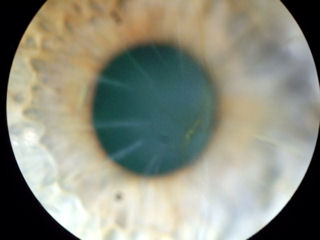
На фотографии ниже представлен глаз пациента, у которого в 1988 году был диагностирован РК, а позже развился эктазия . Вы можете видеть радиальный рисунок разрезов, а также вертикальный разрез слева от зрачка. Краситель, попавший в глаз, оседает в открытых разрезах, демонстрируя неспособность роговицы к заживлению. Вы также можете увидеть на роговице что-то похожее на пузырь, который является местом выпячивания роговицы (обведен белым на снимке справа). Это эктазия роговицы. Эктазия возникает, когда роговица становится слишком слабой, чтобы выдерживать постоянное внешнее воздействие нормального внутриглазного давления. Очки могут скорректировать зрение пациента примерно до 20/400. Нажмите на фотографии, чтобы увеличить.
/post-RK_ectasia(900)markedup.jpg){kind=link}
На фотографии слева внизу изображен глаз пациента, перенесшего РК более двадцати лет назад. Спустя годы неизвестные бактерии или другие условно-патогенные микроорганизмы проникли в роговицу через один из открытых разрезов РК (белые стрелки указывают на старые открытые разрезы РК), что привело к инфекция роговицы Инфекция привела к потере зрения и необходимости в пересадка роговицы (красная стрелка указывает на край пересаженной роговицы, который имеет форму полумесяца). В глаз был закапан зеленый краситель, чтобы подчеркнуть неровности роговицы. Зрение пациента очень плохое, и его невозможно полностью скорректировать с помощью очков. Нажмите на фотографию, чтобы увеличить ее.
На фотографии справа внизу показаны старые незажившие разрезы на коже. Нажмите на фотографию, чтобы увеличить.
РК и хирургия катаракты
Марк Пэкер, доктор медицины. Факоэмульсификация после лучевой кератотомии. EyeWorld, январь 2012
Из статьи: К сожалению, сейчас нам приходится сталкиваться с этим непредвиденным наследием, поскольку мы заботимся о растущем числе пациентов с пресбиопической дальнозоркостью и катарактой после операции RK... Если чистый разрез роговицы [для удаления катаракты] выполняется через RK-разрез, существует высокая вероятность того, что крыша [катарактального] разреза расколется вдоль RK-разреза из-за манипуляций в ходе процедуры. Раздвоенная поверхность прозрачного разреза роговицы препятствует хорошей герметизации разреза и чрезмерному оттоку жидкости и, как следствие, нестабильности камеры во время операции по удалению катаракты. Нестабильная камера может привести к многочисленным осложнениям, включая повреждение радужной оболочки, эндотелия, разрыв капсулы и потерю стекловидного тела. Раздвоение крыши разреза также может привести к трудностям при закрытии разреза на роговице в конце операции. Часто для обеспечения водонепроницаемости требуется наложение нескольких швов. Дополнительные швы могут вызвать астигматизм и дискомфорт у пациента. Плохо заделанный разрез на роговице также может увеличить риск эндофтальмит . (Из Википедии - Эндофтальмит - это воспаление внутренних оболочек глаза. Это страшное осложнение всех внутриглазных операций, особенно операций по удалению катаракты, с возможной потерей зрения и самого глаза).
Врезка: Этих пациентов необходимо предупредить о вероятности ошибки в расчете оптической силы хрусталика и о больших хирургических трудностях, связанных с разрезами роговицы. ~ Кевин Миллер, доктор медицины.
На фотографии слева внизу изображен глаз пациента, которому сделали т-образный разрез, а затем операцию LASIK. Зеленый краситель, который был закапан в глаз, попадает в незажившие раны. Нажмите на изображение, чтобы увеличить.
На фотографии справа внизу видны старые шрамы (которые никогда не заживают), расположенные глубоко по зрительной оси (в области зрачка). Эти шрамы рассеивают световые лучи и ухудшают зрение пациента. Нажмите на изображение, чтобы увеличить.
На трех изображениях ниже представлены фотографии глаза пациента, которому была проведена RK, затем LASIK, а затем в результате этих ненужных операций развилась неоваскуляризация роговицы. На верхнем левом снимке вы можете видеть, что зеленый краситель, который был закапан в глаз, попал в открытые разрезы RK и на лоскут LASIK. Это свидетельствует о том, что роговица никогда не заживает. Вы также можете видеть, что кровеносные сосуды врастают в роговицу (неоваскуляризация), что представляет угрозу для зрения. Нажмите на изображение, чтобы увеличить.
На фотографии слева ниже изображена роговица пациента, который 20 лет назад почти ослеп в результате трех отдельных операций по удалению роговицы. Многочисленные видимые разрезы остаются открытыми, что свидетельствует о неспособности роговицы к заживлению. Поверхность роговицы очень неровная, что приводит к искажению и крайне плохому зрению. Из-за ослабленного состояния роговицы у пациента также развился эктазия роговицы . Нажмите на изображение, чтобы увеличить его.
На фотографии справа ниже показана роговица пациента, перенесшего операцию RK в 1995 году, а затем операцию LASIK в 2004 году. Обе роговицы пациента чрезвычайно сухие, а поверхность роговицы сильно неровная. Пораженная роговица раздражается, и в нее врастают кровеносные сосуды. (Здоровая роговица прозрачна и не имеет кровеносных сосудов). Обратите внимание на край лоскута LASIK в положении "9:00", который показывает, что лоскут не зажил после стольких лет. Пациент носит большие терапевтические контактные линзы. Нажмите на изображение, чтобы увеличить.
Ниже представлены две фотографии одного и того же глаза (при разном освещении). Двадцать лет назад пациентке была сделана операция по удалению RK, затем была проведена 2-я операция по удалению RK и две операции LASIK. Края лоскута LASIK и разрезы RK все еще видны спустя много лет, что свидетельствует о неспособности роговицы к заживлению. Эта роговица биомеханически нестабильна, а оптика глаза разрушается в результате таких операций. Нажмите на изображение, чтобы увеличить.
Клинический случай: Буллезная кератопатия после РК
На следующих трех снимках показана роговица пациента, перенесшего сложную операцию по удалению роговицы. Разрез по удалению роговицы проникал в роговицу и повреждал эндотелий на задней поверхности роговицы, который функционирует как насос, поддерживающий прозрачность роговицы. Впоследствии роговицу зашили, оставив шрам. Повреждение эндотелия привело к отеку роговицы, что в конечном итоге привело к отделению эпителия (передней поверхности роговицы) от подлежащей ткани роговицы. Круглая область, похожая на пузырь, на фотографии в верхнем левом углу и область, обведенная зеленым кружком на фотографии в верхнем правом углу, - это место отслоения эпителия от роговицы, которое показано на снимке сканирования в поперечном сечении внизу.
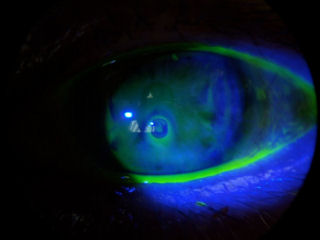
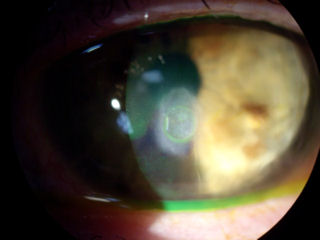
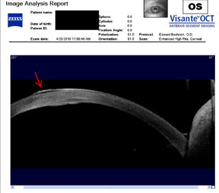
На двух фотографиях, приведенных ниже, показана роговица пациента, перенесшего операцию RK, за которой последовала операция LASIK. Обратите внимание на кровеносные сосуды, проходящие от белка глаза к роговице в положении "5 часов". Нормальная роговица прозрачна и не содержит сосудов. Это болезненное состояние, известное как неоваскуляризация роговицы, которое является прямым результатом травмы роговицы в результате ненужных, разрушительных операций. Зрение этого пациента ухудшится, если кровеносные сосуды достигнут поля зрения. В дополнение к аномальному росту кровеносных сосудов, вы можете видеть старые разрезы RK и мутное кольцо по периферии роговицы, которое представляет собой край лоскута LASIK.
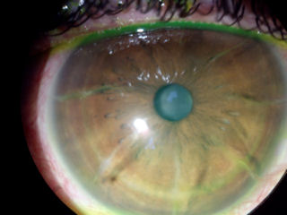
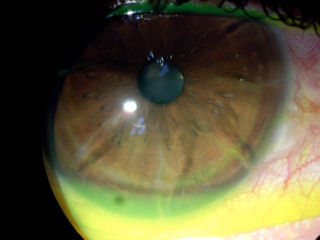
На изображении слева внизу показан разрез роговицы крупным планом. Желтая стрелка указывает на плотный рубец от разреза. Если внимательно посмотреть на кончик зеленой стрелки, можно увидеть прорастание кровеносных сосудов в роговицу в месте образования рубца. Нажмите на фотографию, чтобы увеличить ее.
На рисунке справа внизу показан глаз с разрезами RK. Зеленая стрелка указывает на прорастание кровеносных сосудов в роговицу в положении 6:00. Нажмите на фотографию, чтобы увеличить.
На фотографии слева внизу показана роговица после операции RK с открытыми разрезами и прорастанием кровеносных сосудов в роговицу в 4:00 и 6:00. Пациентка носит жесткую склеральную линзу, которая видна на белке глаза. С помощью линзы пациент видит 20/20 без зрительных искажений.
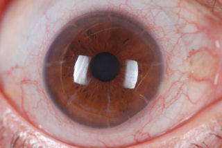
На двух изображениях ниже показаны глаза, которым были проведены как RK, так и LASIK. Фотографии были сделаны с помощью щелевой лампы (био-микроскопа) после нанесения флуоресцеиновое окрашивание на глазу. Желто-зеленый круг по периферии роговицы - это край лоскута LASIK. Узор в виде спиц - это разрезы RK, которые хорошо видны. Края лоскута LASIK и разрезы RK окрашиваются в зелено-желтый цвет, потому что краситель оседает в ранах, которые еще не полностью зажили.
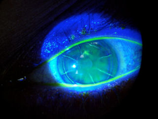
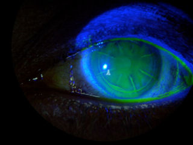
На следующих четырех изображениях ниже также показано, что разрезы на роговице никогда не заживают. Эти открытые отверстия могут позволить условно-патогенным организмам проникать в глаз, вызывая инфекции и воспаление. На первых двух фотографиях изображены роговицы через 20 лет после операции. На 4-м снимке (внизу справа в этом разделе) показана роговица пациента, которому в 1989 году было проведено 2 операции RK, а в 2000 году - LASIK. Зеленый цвет вокруг лоскута LASIK указывает на отверстие в шве лоскута. Зеленая краска в разрезах RK указывает на то, что эти разрезы все еще открыты и подвергают пациента риску заражения и воспаления.
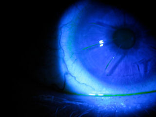
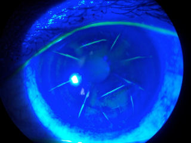
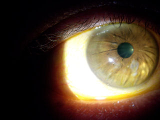
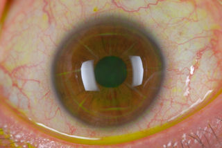
На изображении слева внизу показан глаз пациента, которому была выполнена пересадка роговицы после неудачной операции RK. Обратите внимание на разрезы RK в верхней части поля зрения. Трансплантат пришлось размещать не по центру из-за длинных и глубоких разрезов.
На фотографии справа внизу показан глаз пациента с очень длинными, глубокими и широкими рубцами от RK. Пациент носит жесткую склеральную контактную линзу. Край линзы виден на белке глаза.
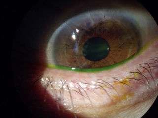
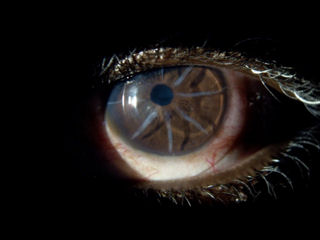
Эктазия роговицы может возникнуть после лучевой кератотомии (РКК), а также после операции LASIK. На рисунке ниже слева показана роговица пациента с эктазией после РКК. У пациента была РКК в 1988 году. В 1990 году он начал терять зрение. Помимо выступа роговицы, обратите внимание на слабое белое пятно в верхней части изгиба. Это внутренняя ткань роговицы, которая выступает из одного из разрезов RK.
На фотографии ниже справа изображена роговица пациентки, потерявшей функциональное зрение после операции RK 17 лет назад. Разрезы RK необычно глубокие и длинные. Обратите внимание, насколько плоская роговица вдоль зрительной оси с меньшим уклоном. Пациентка недавно была в хорошей физической форме. Доктор Бошник с новыми специальными твердыми контактными линзами и восстановил функциональное зрение.
.jpg)
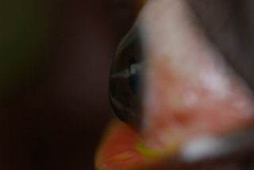
На следующих двух фотографиях показана роговица пациента, перенесшего 2 операции RK, за которыми последовали 2 операции LASIK. На фотографии слева пациент носит склеральную линзу.
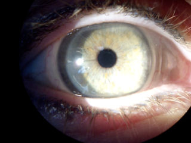
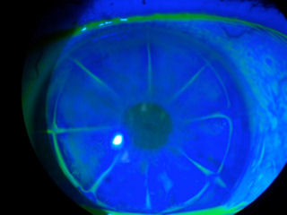
На фотографии слева внизу изображена роговица 60-летней пациентки, перенесшей 2 операции на роговице, а затем 2 операции LASIK. В очках острота зрения на этом глазу составляет 20/400. Фотография сделана после закапывания специального красителя, который выделяет пораженные участки роговицы. Зелено-желтые линии - это открытые разрезы RK. Кольцо по периферии роговицы - это край лоскута LASIK, который никогда полностью не заживет. Эти открытые раны подвергают пациента пожизненному риску проникновения условно-патогенных бактерий и вирусов в роговицу с потенциально катастрофическими последствиями.
На фотографии справа внизу изображена роговица пациента, у которого наблюдается врастание эпителия после операции RK, RK enhancement, LASIK и LASIK-улучшения. Красная стрелка указывает на все еще открытый разрез RK. Зеленая стрелка указывает на незаживший край лоскута LASIK. Желтая стрелка указывает на очаг врастания эпителия, который является потенциально опасным для зрения осложнением. Пациент испытывает постоянную боль в дополнение к крайне нечеткому и искаженному зрению. Нажмите на фотографию, чтобы увеличить изображение.
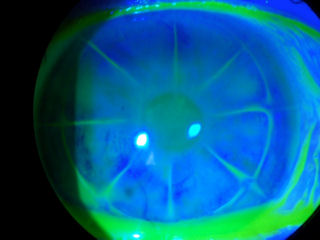
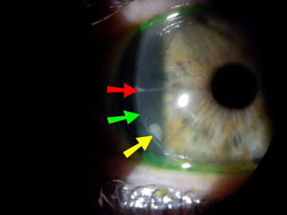
На рисунке слева внизу приведена фотография роговицы пациента, перенесшего лучевую терапию восемнадцать лет назад. В дополнение к открытым радиальным разрезам, у пациента имеется открытый горизонтальный разрез. Темно-синяя овальная область, окружающая горизонтальный разрез, представляет собой область утолщения роговицы ( эктазия ). Зрение пациента в очках и без них очень плохое. Пациенту необходимы большие жесткие контактные линзы, которые закрывают неровную поверхность роговицы.
На изображении справа внизу изображена роговица RK с весьма необычными разрезами.
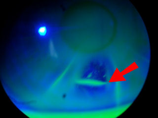
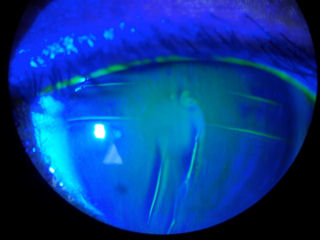
На фотографии слева внизу показаны открытые разрезы через 18 лет после операции.
На рисунке справа внизу показан еще один необычный узор кроя RK.
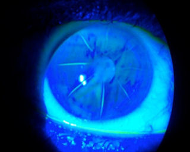
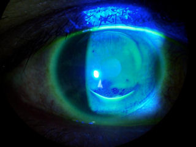
На фотографии ниже показана роговица с глубокими горизонтальными поперечными разрезами в дополнение к радиальным разрезам. Нажмите на изображение, чтобы увеличить.
Следующие изображения были получены с использованием метода, называемого оптической когерентной томографией, или ОКТ. Прибор позволяет получить изображение в поперечном сечении путем сканирования передней части глаза (переднего сегмента) лучом света. Думайте об этом как об ультразвуке, использующем свет вместо звуковых волн для создания изображения тканей.
На изображении слева внизу показана роговица с очень глубокими разрезами. Обратите внимание, что разрезы проходят почти на всю толщину роговицы. На изображении справа внизу показана склеральная линза на роговице после операции с открытыми разрезами. Эта роговица нестабильна. Нажмите на изображения, чтобы увеличить изображение.
На двух изображениях, приведенных ниже, представлены фотографии роговицы пациентки, у которой был РК и, как следствие, развилась эктазия. Толщина этой роговицы в самом тонком месте составляет всего 180 микрон. Средняя толщина роговицы нормального глаза составляет приблизительно 550 микрон. Как вы можете видеть, поверхность роговицы очень неровная, что приводит к искажению зрения. Нажмите на изображения, чтобы увеличить изображение.
Слева внизу красная стрелка указывает на старый разрез. Нажмите на изображение, чтобы увеличить.
Справа внизу изображена роговица после операции RK и LASIK в жестких контактных линзах. Нажмите на изображение, чтобы увеличить.
На рисунке ниже слева представлена топография роговицы глаза, которая развилась эктазия после RK и LASIK. На этой фотографии показана роговица с очень неровной поверхностью, полной холмов и впадин, а не гладкая или сферическая. Синий цвет обозначает более плоские участки роговицы. Красный - наиболее крутая область, которая является выпуклый или выступающий Неровность поверхности роговицы, как показано на рисунке, приводит к искажению зрения.
Изображение справа представляет собой топографию роговицы нормальный, неоперированный глаз для сравнения.

На двух изображениях ниже представлена топография роговицы глаз, подвергшихся двум отдельным процедурам RK, за которыми последовали две отдельные процедуры LASIK. Как вы можете видеть, эти роговицы имеют очень неправильную форму.
Две "успешные" процедуры RK, за которыми последовала "успешная" операция LASIK, за которой последовало усовершенствование LASIK
Отсроченное раскрытие лучевой кератотомии после операции по удалению катаракты без осложнений
Выдержка: Предыдущая рекомендация не только усложняет выбор мощности интраокулярной линзы из-за непреднамеренной послеоперационной дальнозоркости и послеоперационного смещения, но и может снизить прочность роговицы на растяжение. Сообщалось о расхождении швов при проведении операции по удалению катаракты с помощью факоэмульсификации, трансплантации роговицы и после тупой травмы, включая надувание подушки безопасности в автомобиле. Предыдущие сообщения свидетельствуют о значительной изменчивости прочности роговицы после операции по удалению катаракты.

Через 10 лет у пациента с РК развивается эктазия, ему проводится сшивание, в результате которого разрезы на РК становятся зияющими
Примечание редактора: Я прочитал историю болезни пациентки, перенесшей РК, у которой спустя 10 лет развилась эктазия. Пациентке была проведена кросслинкинг коллагеном роговицы. На 1-й день после кросслинкинга пациентка почувствовала сильную боль. Было обнаружено, что открылся один из разрезов в области RK. На четвертый день после сшивания открылся другой разрез, и снова на 7-й день открылся третий разрез. Пациент был доставлен в операционную, где открытые разрезы были зашиты. Впоследствии у пациента возникло помутнение и повторное открытие разрезов. Потребовалась еще одна операция, чтобы зашить разрезы. Через шесть месяцев швы были сняты, но у пациентки остались серьезные рубцы на роговице, которые сохранились еще год спустя. Смотрите резюме ниже.
- - - - - - - - - - - - -
Зияние радиальных и поперечных разрезов роговицы, возникающее на ранних сроках после CXL.
J Рефракционная хирургия катаракты. Декабрь 2011;37(12):2214-7.
Абад Джей Си, Варгас А.
Абстрактный
У 33-летней женщины с эктазией роговицы после лучевой и астигматической кератотомии произошло сшивание роговицы коллагеном, в результате чего нижние разрезы (2 радиальных и 1 поперечный) стали зияющими, что потребовало наложения швов. Через 6 месяцев разрезы зажили, оставив фиброзные рубцы. Представлены данные по остроте зрения, рефракции, фотографиям роговицы, а также топографическим данным и измерениям волнового фронта роговицы. Через 2,5 года топографическая неровность нижней части роговицы продолжала улучшаться.
Пациент из РК обратился в FDA с жалобой на ухудшение зрения на протяжении многих лет
Отрывок: К 2010 году я начал замечать, что состояние моего зрения быстро ухудшается, и я снова обратился к доктору [удалено]. Доктор [удалено] снова надел мне очки, но они мне не помогли. Доктор [удалено] в настоящее время рекомендует мне контактные линзы, которые немного помогают, но не устраняют мою проблему. Я медленно слепну, и мне сказали, что ничего нельзя сделать, чтобы исправить ущерб, нанесенный доктором [удалено] в 1993 году. Я [удалено] подрядчик, я никогда не был женат, и у меня нет детей. Я работаю не по найму, что является моим единственным средством к существованию. Как только я полностью потеряю зрение, а это, как мне сказали, произойдет совсем скоро, у меня не останется средств к существованию. Прочитать полный отчет
Жалоба FDA через 15 лет после РК
В 1995 году в [удалено] я выбрал рефракционную офтальмохирургию под названием RK. В то время это была [удалено] доплата за каждый глаз, и, хотя это было немного радикально, даже пугающе, отзывы и реклама того времени были убедительными. Эффект был поразительный, в течение 12-13 лет, затем все пошло наперекосяк. Я попытался вернуться к очкам для коррекции зрения, которые у меня были, но их было невозможно использовать. Поэтому я убрал их, и я просто продолжал справляться с ухудшающимся зрением. Ничего драматичного, просто все расплывчато. Я и понятия не имел, что из-за моего решения присоединиться к RK меня записали в клуб, членом которого я не хотел быть. Люди, которые пошли по проторенному пути коррекции зрения без исследований, которые ясно указывали бы на будущие осложнения. Три недели назад я проснулся и обнаружил, что не могу определить время на расстоянии 8 футов. К счастью, это было утреннее происшествие и повторялось не слишком часто. Однако я узнал, что теперь мои глаза ориентированы на расстояние 20/60 влево, а правые - на 20/150 вправо, а правый глаз, мой глаз для чтения, ориентирован на чтение 20/30. Я [удалено] на пенсии и только что закончил оформление своей страховки vision [удалено] в конце октября. [вставьте, нахмурившись]. Важно то, что я много узнаю и читаю обо всем пост-казахстанском населении и проблемах в Интернете. Я вижу, что заплатил свои взносы и являюсь полноправным участником с прекрасным будущим. Источник
Жалоба FDA: осложнения возникают через 14 лет после РК
Осложнения после лучевой кератотомии через 14 лет после операции. Ореолы, призрачность, тени, размытость, звездообразование, снижение контрастности, глубины и ночного зрения, головокружение, светобоязнь, быстрая дегенерация зрения. Резкое ухудшение зрения через 14 лет после лучевой кератотомии. Источник
О "Кошмаре" рефракционной хирургии сообщили в FDA: за РК последовала ФРК
В 1992 году я потерял зрение после рефракционной операции - рк. В начале октября я пошел на "бесплатный" семинар, чтобы собрать информацию, прежде чем обратиться к доктору. У меня уже была рубцовая ткань на левом глазу, но доктор сказал, что "проблем нет", и мы приступили к двусторонней рефракционной операции. С самого начала у меня было плохое зрение. Мне сказали, что "все еще не наладилось". Мы всегда можем провести коррекцию. "я с трудом справлялся со своими обязанностями дома и на работе. В 1993 году я поехал в другой город, чтобы обратиться к другому врачу - по рекомендации доктора (первой). Он провел ФРК на моем левом глазу, а позже планировал хирургическое вмешательство на правом глазу. В то время второй доктор сказал мне, что доктор (первый) сделал надрезы на моих глазах слишком глубокими и длинными. Теперь мой левый глаз видел хуже, чем до фрк, и был покрыт рубцовой тканью от лазера. В 1995 году я ушла в отпуск по болезни с должности медсестры-хирурга и перенесла операцию по пересадке роговицы. В том же году я подала заявление о выходе на пенсию по инвалидности. В 1996 году я предстала перед судом присяжных по делу о врачебной халатности. Я был жертвой, которую выставили преступником. Мы проиграли дело и вляпались в долги. Доктор (первый) сказал мне, что я хороший кандидат на рефракционную операцию, что у меня будут хорошие результаты и я могу выбросить свои очки. Он никогда не говорил мне, что после этой операции пути назад нет. Он никогда не упоминал о звездообразовании, куриной слепоте, двоении в глазах или болезненной сухости глаз. Он никогда не упоминал, что я не смогу заботиться о своих троих детях. Каждый день я переживаю этот кошмар и съеживаюсь, когда вижу ту же рекламу, что и сегодня, когда я перенес свою катастрофическую операцию на глазу. Источник
Жалоба FDA: Пациент, обманутый хирургом, вводит в заблуждение рекламой рефракционной хирургии
Доктор уговорил меня сделать rk-лучевую кератотомию на глазах. Он сказал, что у него никогда не было проблем ни с одной из его операций, и он гарантировал мне успешный исход. Однако после операции мои глаза стали очень уставать и болеть. Он сказал, что я читаю по линиям "двадцать на двадцать" на глазной карте и что эта проблема у меня в голове. Он не предложил никакой поддержки или руководства в этом вопросе и практически уволил меня. Я был потрясен. Теперь я остался с воспаленными, усталыми глазами и без ответов, поскольку это была новая процедура в нашей области. И я отправился в путешествие, чтобы попытаться найти решение. Это путешествие привело меня ко многим известным глазным хирургам. Они назначили мягкие и жесткие контактные линзы, очки, дважды провели кк-кондуктивную кератопластику, операцию lasik, но ничего не помогло решить проблему. Эти офтальмологи должны честно обсудить подводные камни корректирующей хирургии глаза, а не прикрываться вводящей в заблуждение рекламой и ажиотажем. Спасибо вам за ваше время и заботу по этому вопросу. Источник
Данные о пациентах Из РК, Страдающих Нарушениями Зрения С 1990 Года, Представлены В FDA
В 1990 году мне была сделана операция по удалению rk, и, хотя процедура была проведена много лет назад, у меня ухудшилось зрение, появился эффект ореола, ухудшилось ночное зрение и "дегабилизировалось" дневное зрение. Источник
Отчет о травмах пациента, поданный в Управление по санитарному надзору за качеством пищевых продуктов и медикаментов: Множественные операции по удалению РК, операция по удалению катаракты, LASIK и PRK
Хирург сообщил о своих опасениях по поводу клинических результатов. Анализ предоставленных записей пациентов показывает, что у одного пациента после операции lasik только на правом глазу наблюдалась потеря bcva. Этот пациент перенес несколько хирургических вмешательств в 1980-х и 1990-х годах и жаловался на появление призраков, звездных вспышек, ореолов и трудности с вождением в ночное время. У него была диагностирована ядерно-склеротическая катаракта и остаточный гипероптический астигматизм после операции rk. Этот пациент перенес операцию по удалению катаракты с использованием имплантата iol до проведения операции lasik. Показатель bcva пациента до операции lasik составлял 20/32. Через 5 месяцев после операции показатель bcva пациента составил 20/30. Через 13 месяцев после операции lasik было проведено повышение уровня фрк. После месячного послеоперационного повышения prk показатель bcva у этой пациентки составил 20/50. Процедура Lasik после имплантации иол не является одобренным показанием к применению данного продукта. Источник
"Даже в ситуациях, когда речь шла о жизни или смерти, врачи, медсестры и пациенты реагировали на плохие стимулы. Например, в больницах, где ставки возмещения за аппендэктомию были выше, хирурги удаляли больше аппендиксов. Еще одним замечательным примером является эволюция глазной хирургии. В 1990-х годах офтальмологи строили карьеру на проведении операций по удалению катаракты. Они занимали полчаса или даже меньше, и все же Medicare возмещала им 1700 долларов в месяц. В конце 1990-х годов программа Medicare снизила уровень возмещения расходов примерно до 450 долларов за процедуру, и доходы офтальмологов-хирургов упали. По всей Америке офтальмологи заново открыли малоизвестную и рискованную процедуру, называемую лучевой кератомией, и в хирургии для коррекции небольших нарушений зрения произошел настоящий бум. Недостаточно изученная процедура рекламировалась как средство для облегчения страданий тех, кто носит контактные линзы. "На самом деле, - говорит Бэрри, - стимулом было поддержание их высокого дохода, часто составляющего от одного до двух миллионов долларов, и этому было свое оправдание. Индустрия поспешила придумать что-то менее опасное, чем лучевая кератомия, и в конце концов появилась система Lasik".;
Майкл Льюис. Большая короткометражка: Внутри машины судного дня. (2010, WW Norton). стр. 43-44.
Лазерный кератомилез in situ при аномалии рефракции после лучевой кератотомии.
Индийский журнал офтальмологии, июль-август 2011;59(4):283-6.
Синха Р., Шарма Н., Ахуджа Р., Кумар С., Ваджпаи Р.Б.
Цель: Оценить безопасность и эффективность лазерного кератомилеза in situ (LASIK) на глазах с остаточной/индуцированной аномалией рефракции после лучевой кератотомии (РК).
Дизайн: Ретроспективное исследование.
Материалы и методы: Был проведен ретроспективный анализ данных 18 глаз 10 пациентов, перенесших операцию LASIK по поводу аномалий рефракции после RK. Все пациенты перенесли RK на обоих глазах по крайней мере за год до LASIK. Такие параметры, как острота зрения без коррекции (UCVA), острота зрения с наилучшей коррекцией (BCVA), контрастная чувствительность, острота зрения при ярком свете и параметры роговицы, оценивались как до операции, так и после нее. Программное обеспечение для статистики: STATA-9.0.
Результаты: Среднее значение UCVA до LASIK составляло 0,16±0,16, которое улучшилось до 0,64 ± 0,22 (P < 0,001) через год после LASIK. Через год после проведения LASIK у четырнадцати глаз (из 18) показатель остроты зрения по шкале Снеллена составлял 20/30. Среднее значение BCVA до проведения LASIK составляло 0,75 плюс 0,18. Этот показатель улучшился до 0,87 ± 0,16 через год после проведения LASIK. Средняя сферическая аномалия рефракции на момент проведения LASIK и через год после процедуры составила -5,37 ±4,83 диоптрий (D) и -0,22 ± 1,45D соответственно. Только на трех глазах через год наблюдения была выявлена остаточная сферическая аномалия рефракции, равная 1,0D. На двух глазах мы отметили раскрытие разрезов RK. Ни на одном глазу эпителиальный рост не развивался до 1 года после LASIK.
Заключение: LASIK эффективен при лечении аномалий рефракции после РК. Однако, это сопряжено с риском осложнений, связанных с использованием лоскута, таких как раскрытие ранее нанесенных разрезов RK и отслоение роговичного лоскута.
Осложнения лучевой кератотомии с небольшой прозрачной зоной
ЦЕЛЬ: Проанализировать результаты послеоперационного лечения пациентов с радиальной кератотомией, у которых диаметр зоны просветления менее 2,75 мм.
МЕТОДЫ: Был проведен ретроспективный обзор всех пациентов с лучевой кератотомией, у которых диаметр зоны просветления составлял менее 2,75 мм, обратившихся на консультацию в период с августа 1993 по сентябрь 1995 года. Были изучены предоперационные записи и хирургические заключения, а также проведено тщательное офтальмологическое обследование.
РЕЗУЛЬТАТЫ: в общей сложности у 37 глаз размер просвета был менее 2,25 мм. Шесть глаз были исключены из последующего анализа из-за кератоконуса. У остальных 31 глаза средний размер прозрачной зоны составлял 1,5 мм (стандартное отклонение - 0,4 мм; диапазон - 0,9-2,2 мм). Послеоперационные осложнения включали сильный ослепляющий эффект в 31 (100%) из 31 глаза, непереносимость контактных линз в 19 (100%) из 19 установленных глаз, потерю остроты зрения по Снеллену (> 2 линий) в 25 (81%) из 31 глаза, неспособность управлять автомобилем ночью в 11 (69%) из 16 пациентов, суточные колебания зрения от умеренной до тяжелой степени в 21 (68%) из 31 глаза, недостаточная коррекция рефракции более чем на 1 диоптрию в 16 (52%) из 31 глаза, потеря работы у 4 (25%) из 16 пациентов, полиопия у 5 (16%) из 31 глаза, рефракционная гиперкоррекция более чем на 1 диоптрию в 3 (10%) из 31 глаза и отслойка сетчатки, вызванная применением пилокарпина, в 1 (3%) из 31 глаза.
ВЫВОДЫ: Использование лучевой кератотомии с открытыми зонами диаметром менее 2,25 мм сопряжено с высокой частотой осложнений и небезопасно. От радиальной кератотомии с закрытыми зонами малого размера следует отказаться. Хотя это исследование было ограничено прозрачными зонами диаметром менее 2,25 мм, авторы поддерживают текущие рекомендации о том, что диаметр прозрачной зоны должен составлять не менее 3,0 мм.
Источник: Гримметт М.Р., Холланд Э.Дж. Осложнения лучевой кератотомии с небольшой открытой зоной. Офтальмология. Сентябрь 1996 г.; 103(9): 1348-56.
Результаты исследования проспективной оценки лучевой кератотомии (PERK) через 10 лет после операции.
ЦЕЛЬ: Определить отдаленные последствия и стабильность рефракции после стандартной методики лучевой кератотомии при миопии в ходе девятицентровой проспективной оценки лучевой кератотомии (PERK) Исследование через 10 лет после операции.
МЕТОДЫ: Радиальная кератотомия с использованием восьми центростремительных разрезов была выполнена для уменьшения миопии с -2,00 до -8,75 диоптрий в 1982 и 1983 годах. В среднем через 10 лет пациенты прошли стандартизированное офтальмологическое обследование, аналогичное предыдущим исследованиям.
РЕЗУЛЬТАТЫ: Из 427 пациентов (793 глаза, которым была выполнена лучевая кератотомия), 374 пациента (88%) (693 глаза) вернулись на 10-летнее обследование. Из 675 глаз с данными о рефракции у 38% была аномалия рефракции в пределах 0,50 D, а у 60% - в пределах 1,00 D. Для 310 впервые прооперированных глаз средняя аномалия рефракции составила -0,36 D через 6 месяцев и изменилась в сторону гиперметропии до +0,51 D через 10 лет. Средний темп изменений составил +0,21 в год в период от 6 месяцев до 2 лет и +0,06 в год в период от 2 до 10 лет. В период от 6 месяцев до 10 лет аномалия рефракции у 43% глаз изменилась в сторону дальнозоркости на 1,00 D и более. Смещение дальнозоркости было статистически связано с диаметром прозрачной зоны. Некорригированная острота зрения составила 20/20 или выше в 53% из 681 глаза и 20/40 или выше в 85%. Потеря остроты зрения с коррекцией очками на 2 линии и более в таблице Снеллена произошла у 3% из всех 793 глаз, подвергшихся хирургическому вмешательству. Из 310 пациентов с двусторонней лучевой кератотомией 70% сообщили, что в течение 10 лет не носили очки или контактные линзы для улучшения зрения вдаль.
ЗАКЛЮЧЕНИЕ: Методика радиальной кератотомии PERK позволила устранить оптическую коррекцию на расстоянии у 70% пациентов с приемлемым уровнем безопасности. Смещение аномалии рефракции в сторону гиперметропии продолжалось в течение всех 10 лет после операции.
Источник: Уоринг, 3-й, Линн МЮ, Макдоннелл Пи Джей. Arch Ophthalmol. 1994, октябрь; 112(10): 1298-308.
Система Casebeer для прогнозируемой кераторефракционной хирургии. Годичное обследование 205 глаз подряд.
ЦЕЛЬ: В данном исследовании представлены результаты современной хирургической технологии лучевой кератотомии (РК) с использованием кераторефракционной системы Casebeer. Эти результаты контрастируют с результатами проспективной оценки кераторефракционной системы для радиальной кератотомии (PERK), разработанной около 12 лет назад.
МЕТОДЫ: Были проанализированы двести пять последовательных хирургических вмешательств, что стало первым годом опыта работы с RK для одного из авторов (TPW). Все процедуры соответствовали номограммам системы Casebeer. Процедуры по улучшению были выполнены в соответствии с номограммами системы Casebeer.
РЕЗУЛЬТАТЫ: Наблюдение за 100% пациентами было завершено. Послеоперационная циклоплегическая рефракция в среднем составила +0.27 +/- 0.58 диоптрий (D) остаточной коррекции рефракции (диапазон от -0,88 до +2,50 D). Через год после операции у 86% пациентов сохранялась острота зрения 20/25 или выше, а у 99% пациентов сохранялась острота зрения 20/40 или выше. Это вызывало беспокойство, но не выводило из строя. при применении препарата РК часто наблюдались побочные эффекты, такие как ослепление, звездообразование и нарушение зрения.
ВЫВОД: Простая в освоении система Casebeer для кераторефракционной хирургии может обеспечить чрезвычайно точный результат операции. Основная причина повышения точности по сравнению с системой PERK заключается в возможности хирурга сочетать первичную хирургическую процедуру с дополнительными операциями. Хотя РК ни в коем случае не является совершенной хирургической техникой, побочные эффекты, как правило, относительно минимальны, а удовлетворенность пациентов, как правило, чрезвычайно высока.
Источник: Верблин Т.П., Стаффорд Г.М. Офтальмология. Июль 1993 г.; 100(7):1095-102.
Эктазия роговицы как осложнение повторной кератотомии
ОБЩАЯ ИНФОРМАЦИЯ: Поэтапная кератотомия, или "расширяющая хирургия", может обеспечить более предсказуемый результат, но также подвергает пациента дополнительным хирургическим рискам.
МЕТОДЫ: 39-летнему мужчине была выполнена астигматическая кератотомия по поводу миопического астигматизма, после чего было проведено 12 процедур по коррекции остаточного астигматизма.
РЕЗУЛЬТАТЫ: Эти процедуры привели к двойной шестиугольной кератотомии. Лучшая острота зрения пациента, скорректированная с помощью очков, ухудшилась до уровня подсчета пальцев. Клинически были отмечены коническое выпячивание центральной части роговицы, симптом Мансона, диффузные субэпителиальные рубцы и истончение центральной части роговицы. Была выполнена сквозная кератопластика. Гистопатологическое исследование показало истончение эпителия в центре, отек эпителия, разрушение боуменова слоя, выраженные рубцы на строме и очаговые участки ослабления эндотелия - данные, соответствующие кератоконусу.
ЗАКЛЮЧЕНИЕ: Этот случай иллюстрирует, что многократные процедуры кератотомии могут привести к эктазии роговицы на внешне нормальных глазах, и предполагает, что гексагональная кератотомия с большей вероятностью может вызвать ятрогенный кератоконус.
Источник: Уэллиш К.Л., Глазго Б.Дж., Белтран Ф., Мэлони Р.К. Рефракционная хирургия роговицы, 1994, май-июнь; 10(3): 360-4.
Ятрогенный кератоконус как осложнение лучевой кератотомии
47-летнему мужчине с семейным анамнезом кератоконуса 12 годами ранее была проведена двусторонняя лучевая кератотомия (РК) без осложнений с дополнениями к астигматической кератотомии (АК). Он заметил постепенное ухудшение зрения с постепенным увеличением миопического сдвига. Острота зрения оставалась низкой даже при использовании очков или мягких контактных линз. Исследование при помощи щелевой лампы выявило 16 хорошо заживших рубцов RK и 2 рубца AK с выраженным понижением высоты роговицы в области астигматического усиления на левом глазу, но в остальном нормальный глаз с 16 хорошо зажившими рубцами RK. Впоследствии ему была проведена сквозная кератопластика по поводу ухудшения зрения, которое не поддавалось коррекции жесткими газопроницаемыми контактными линзами. Микроскопическое исследование роговицы показало, что это кератоконус. Этот случай представляет собой первый документально подтвержденный случай эктазии роговицы как осложнения первичного РК.
Источник: Шейх С., Шейх Н.М., Манш Э. Ятрогенный кератоконус как осложнение лучевой кератотомии. Хирургия рефракции катаракты, март 2002 г.; 28(3): 553-5.
Сложное создание лоскута с помощью фемтосекундного лазера после лучевой кератотомии
ЦЕЛЬ: Описать случай лазерного кератомилеза in situ (LASIK) с использованием фемтосекундного лазера Intralase через 14 лет после лучевой кератотомии (РК) по поводу остаточного миопического астигматизма.
МЕТОДЫ: Пациенту мужского пола 39 лет была проведена двусторонняя операция по коррекции миопии. Выраженная рефракция составила -1,25 -3,00 × 175 D, при этом острота зрения без коррекции (UCVA) составляла 20/50, а острота зрения с наилучшей коррекцией (BCVA) - 20/20. С помощью Orbscan II были проведены измерения центральной и самой тонкой пахиметрии, которые составили 582 и 576 мкм соответственно.
РЕЗУЛЬТАТЫ: Для процедуры LASIK была использована Интралаза, и первоначально во время формирования лоскута наблюдалась потеря всасывания. Лоскут можно было создать снова в той же внутрироговичной плоскости. Во время подъема лоскута разрезы RK были разделены, и один из разрезов RK продвинулся к центру роговицы с усилием, приложенным тупым шпателем. Ни один фрагмент не был полностью отделен от лоскута. Обработка эксимерным лазером и репозиция лоскута были выполнены без каких-либо проблем. На пятом месяце послеоперационного периода его UCVA составила 20/20. Все разрезы RK казались хорошо выровненными. Не было помутнения или врастания эпителия.
ВЫВОДЫ: Этот случай показал, что фемтосекундный лазер Intralase не только не имеет уникальных преимуществ по сравнению с механическим кератомом для лечения глаз после RK, но и может привести к серьезным осложнениям. Мы рекомендуем не использовать фемтосекундное лазерное формирование лоскута на глазах после операции RK.
Источник: Cornea. 2007, Октябрь, 26(9):1138-40. Перенте И, Утин СА, Чакир Х, Йилмаз ОФ.
Отказ от ответственности: Данная информация не предназначена для использования в качестве медицинской консультации. Информация, содержащаяся на этом веб-сайте, представлена с целью предупреждения людей об осложнениях LASIK перед операцией. Лицам, испытывающим проблемы со зрением или другие проблемы с глазами, следует обратиться за консультацией к врачу.